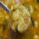
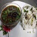
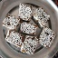

chainsoo
With this delectable dish, we bring to you the tantalizing flavours of Garhwal. High in protein value, Chainsoo is prepared from Sabut Urad dal (black gram lentil) and is a popular lunch option for Pahadis living in any part of the world. To prepare this dish, you need to roast the lentils first and make a fine paste out of it. Transfer the mixture into an iron pot, keep the flame low and stir until it’s ready to serve.
-
Phaanu
This appetizing dish may take a little more time to cook than others, but once it is ready all the time and effort will be worth it. Phaanu also spelled as ‘Phanu’ is prepared by mixing different lentils that are soaked overnight. This soupy dish, when served with freshly cooked white rice, makes a perfect luncheon for winter season.
-

Aalu ka Jhol
Here is an all time favourite for the people of Uttarakhand and you ask why, because it is simple to make and scrumptious to savour. The entire preparation takes less than 15 minutes, so it is one of those dishes that one can abide by when either too tired or lazy to cook. Just boil some potatoes, prepare a simple onion and tomato curry and leave the potatoes in it to cook over slow fire and the result is well… surprising!
-

Bhatt ki Churdkan
Having a rich aroma that lingers in the room for quite a long time, this finger licking dish is one of the best things to eat during chilly winters. Bhatt ki Churdkani also spelled as Churkani is a healthy dish that is prepared from black bhatt blended with rice paste and flour. Having a high nutritive value, Bhatt ki Churdkani can be devoured with steamed rice. The dish contains all the essential vitamins, proteins and minerals so you can relish it any time.
Kandali Saag
If you are a Pahadi reading this, then you’ll probably have a shiver down your spine on hearing the main ingredient of this dish which is ‘Kandali’ also known as Bichhu Ghaas. But don’t be sacred as it won’t hurt your throat because it’s 100% edible. This finger licking dish is prepared by boiling kandali or stinging nettle plant, which is then converted into a fine pulp and is cooked on low flame. The dish is garnished with tomato and butter. Preparing it might be a bit strenuous but once it’s ready you can’t resist it.
Kumauni Raita
Prepared from curd, turmeric, grated cucumber, green chillies and the mustard seeds! The taste of pungent mustard lingers long on your tongue; whereas the goodness of curd and cucumber becomes an asset for your digestion system. Adding more taste to the raita is the coriander garnishing.
Mandua ki Roti
Famously known as a staple food in many parts of North India, Mandua ki Roti refers to the chapattis made from a cereal called Mandua. Mandua ki Roti is served in the main course and represents the culinary style of Uttarakhand. This flat bread is also quite popular among the tourists visiting Uttarakhand.
Til ki Chutney
Made from safed til, pudina & lemon. Special in winter have tasty nature with Tor ki daal & Bhaat or with Gahat ke paranthe..
Gahat ke Paranthe
With aroma so pleasant that it makes enough room for having 4-5 paranthas at once, Gahat ke Paranthe is a famous breakfast dish of Uttarakhand. This mouth-watering dish is prepared by stuffing gahat (a special brown lentil) in a mixture of wheat and mandua flour (finger millet/ragi). It tastes better when served with Bhang ki Chutney or homemade pickle.
Jholi
Jholi is curry preparation from hills of Uttarakhand. Similar to Kadhi recipe from north India, this is bit thicker and spicier.
Singori
One of the most sought-after desserts of Uttarakhand, Singori is the pride of Kumaon and if you are on a trip to Kumaon then not having it shouldn’t be less than missing a winning lottery. This toothsome sweet is made from khoya (condensed milk) which is wrapped into molu leaf. Almora is one of the best places to try this delicacy. The smell of molu leaf and the taste of condensed milk, having an aroma of cardamom and coconut will make you crave for more.
-
Aarsa
A sweet delicacy prepared from Rice and Jaggery & cooked in mustard oil, generally served on the occasion of marriages and festivals. The flavour is so prominent that once eaten, you wouldn’t forget the taste for long.
-

Jhangora ki Kheer
Jhangora ki Kheer is a sweet dish made out of a local millet called Jhangora. It is hailed for its rich texture and taste that lasts on the taste buds for quite a long time. This dish is a must have as it has the goodness of milk, cashews and raisins.
-

Bal Mithai
A very popular sweet dish, particularly in Kumaon, prepared from Khoya (condensed milk) and decorated with small white sugar balls. This is considered a signature sweet of Uttarakhand, very much in demand!
-
Gulgula
Gulgula is yet another flavoursome sweet dish from Uttarakhand that has become a household name in many parts of Northern India. This tempting sweet dish is made from jaggery and is quite popular in the Garhwal region of Uttarakhand
-
Roat
This sweet dish is cooked with jaggery and wheat flour fried in mustard oil. To make it more flavourful, fennel & dry coconut are added to it